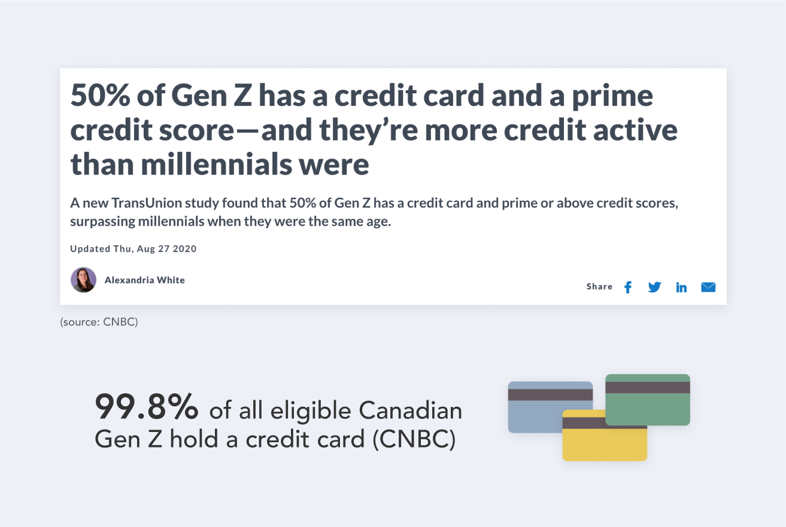
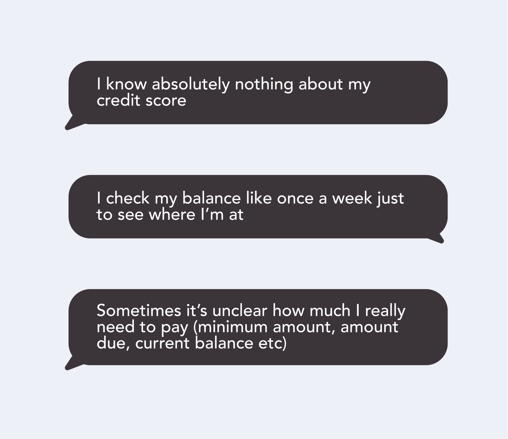
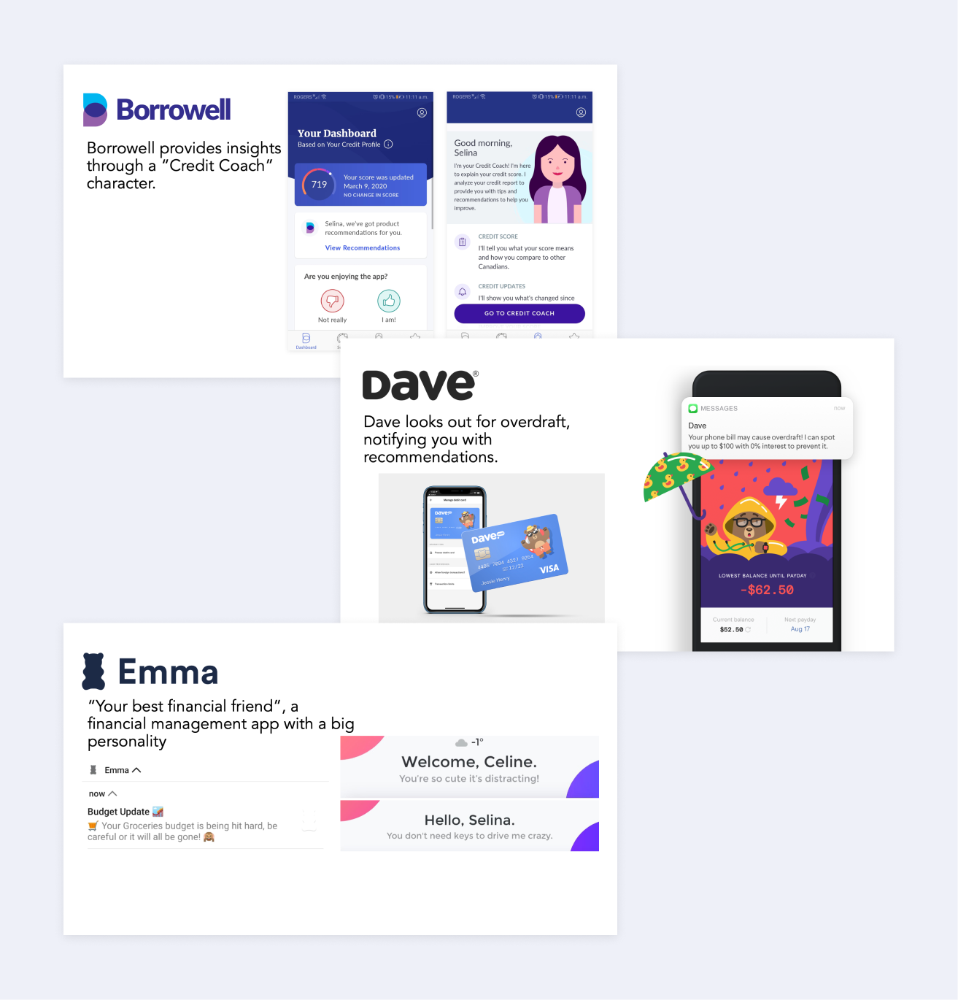

Helping Gen Z become better aware of their credit health.
Role: designer on a team of 2
Timeline: one week
Tools: pen/paper, Figma
Live Figma prototype available here
During my internship at TD Lab, I had the opportunity to participate in the Lab’s hack week. Given our problem statement, “how might we increase the loyalty and longevity of account holders with the Bank?”, my partner Selina Hsu and I came up with Sprout, an app that helps young adults become better aware of their credit health.
Increase the loyalty and longevity of account holders with the Bank.
Since this was a very broad goal, we decided to narrow it down to increasing the loyalty of student customers (currently mostly consisting of Gen Z) to continue banking with TD as they transition into post-university life, as we learned that decreasing the dropoff rate from student accounts to regular (non-student) accounts was one of the objectives of the bank.
Given the narrowed-down scope, we hypothesize that improving student customer experience will translate to retention.
Gen Z is incredibly credit active.
Learning that so many of us have credit cards, we decided to delve more into Gen Z’s relationship with cards, focusing on credit health.
Coincidentally, earlier that week we had been talking about how we didn’t really understand what exactly credit health was and why it was important. We wanted to hear what other Gen Z/current undergrad students had to say, so we interviewed a couple of our friends and fellow interns.
In general, students don’t really know what they’re doing in terms of credit health or what it is.
Since we knew that an app would be the best way to connect to a Gen Z audience, we decided to research some popular finance apps. According to Ernst & Young, 50% of Canadians have become fintech adopters in 2019, with young adults making up the biggest bracket. So we researched popular (non-bank) financial apps and services. In particular, we looked at Borrowell, Emma and Dave.
All of these services are personable and friendly, providing an experience that traditional, often hostile, to-the-point banking apps typically do not.
Pain points:
Refining the goal:
By making it easier for student customers to understand and manage their credit health (a service currently not offered by other banks), and rewarding good credit health, we can incentivize them to continue using TD services as they transition to post-university life, prolonging their account with TD.
Nice-To-Have:
To recontextualize credit health, we decided to personify credit health in the form of a cute plant. The better your credit health, the happier and healthier your plant is. Gen Z also grew up playing with Tamagotchis, Pokémon and Nintendogs which all teach kids how to take care of a virtual pet. As young adults, many of us collect houseplants and use apps like Forest (an app where you grow a tree by staying off your phone) to keep ourselves focused. Having grown up with games and apps like these, it’s no surprise that we’re better at taking care of others than taking care of ourselves.
To clarify factors that impact credit health, we researched factors that impact credit health and translated them into the health of the plant:
Design features include:
Improvements from sketches:
At the end of the week, we presented our idea to the Lab’s full-time designers, developers and business analysts, and our project was selected as the hack week winner.
This last day of hack week was unfortunately our last day at the Lab before going remote due to Covid. Typically, we would have gotten to present our project to execs at the TD Towers in Toronto, however given the circumstances, our idea was presented via video chat instead.
Rather than just displaying and conveying information, I learned how to design an app that teaches users.
If we had more time and resources to further enhance the experience, we would think of ways to tailor the experience for customers who onboard with poor credit health to begin with. We acknowledge that it’s probably super discouraging if you’ve downloaded an app to take better control of your credit health but start off with a really sad plant. Furthermore, we would explore ways to integrate existing TD products and services such as Autopay and EasyWeb.